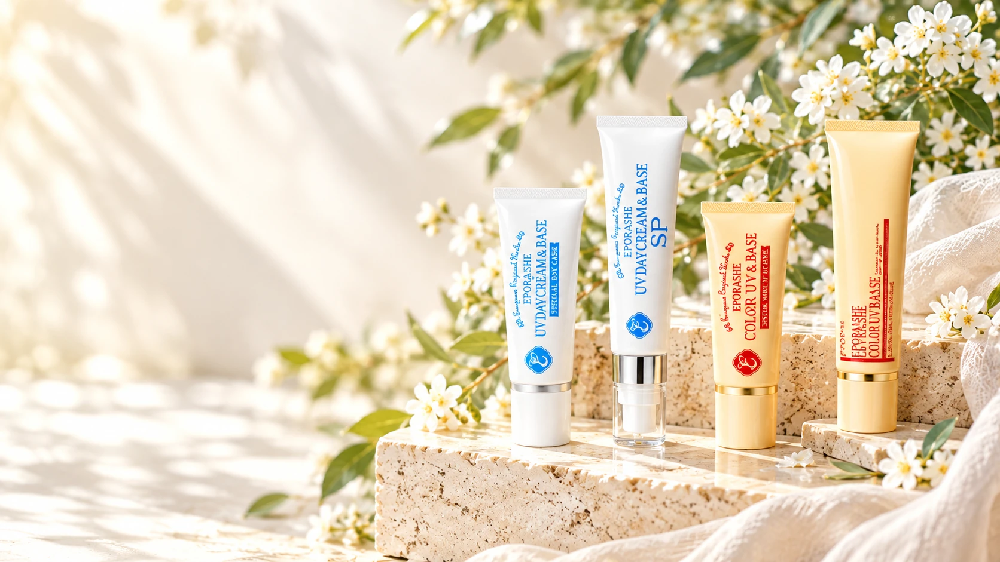
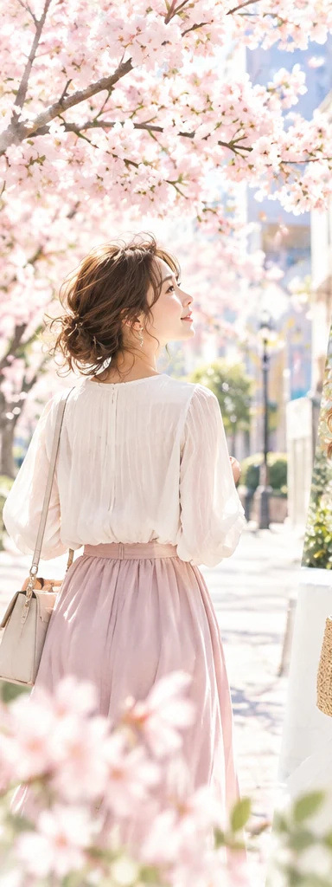
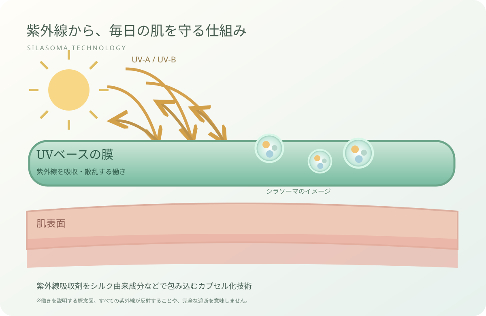
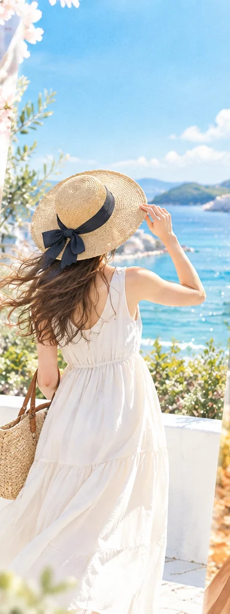
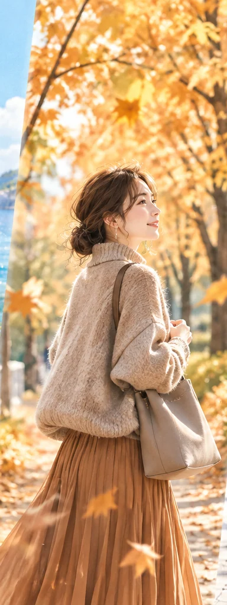
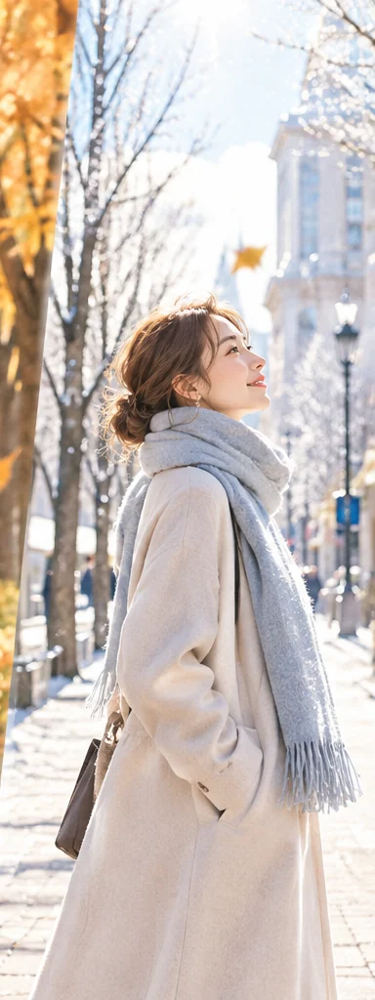
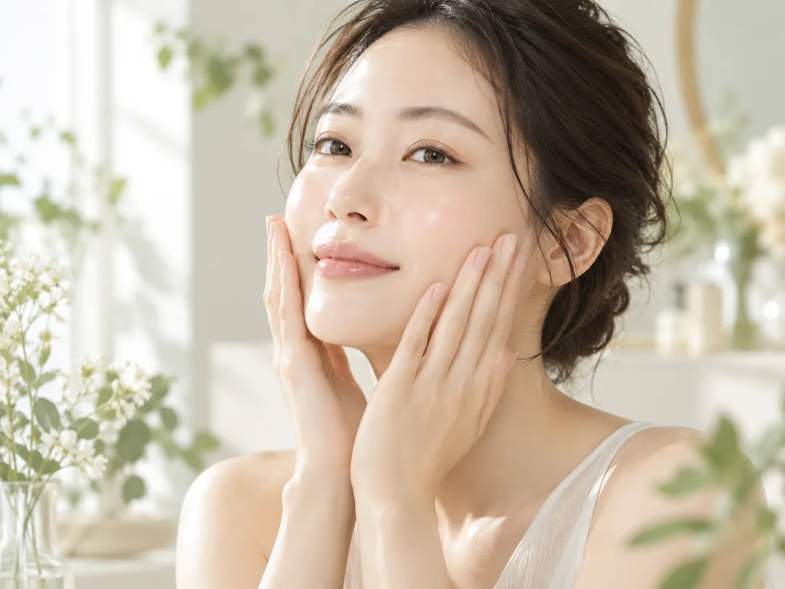
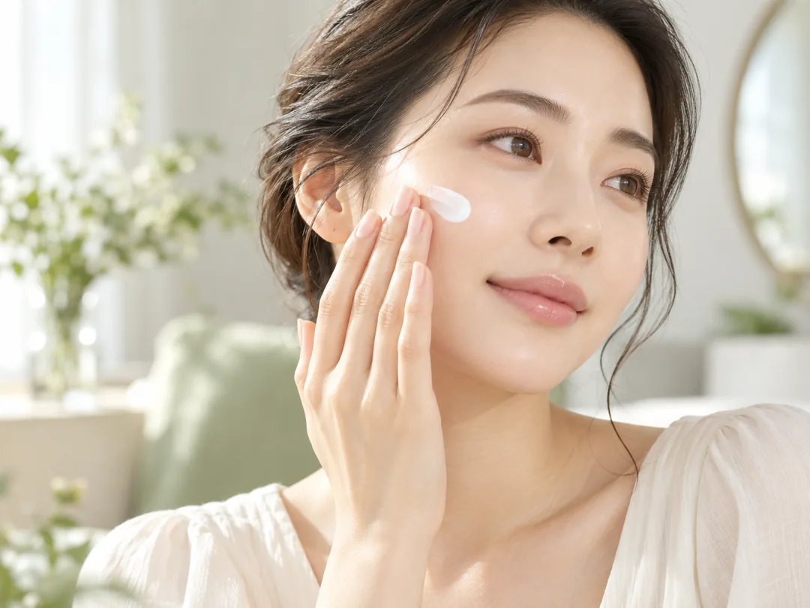
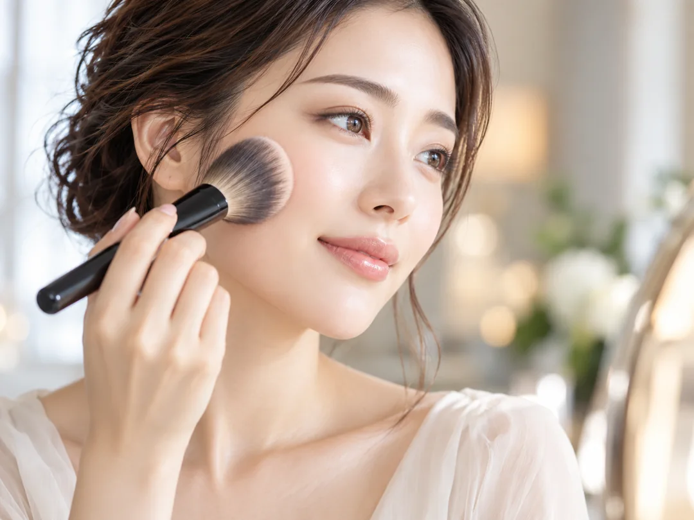
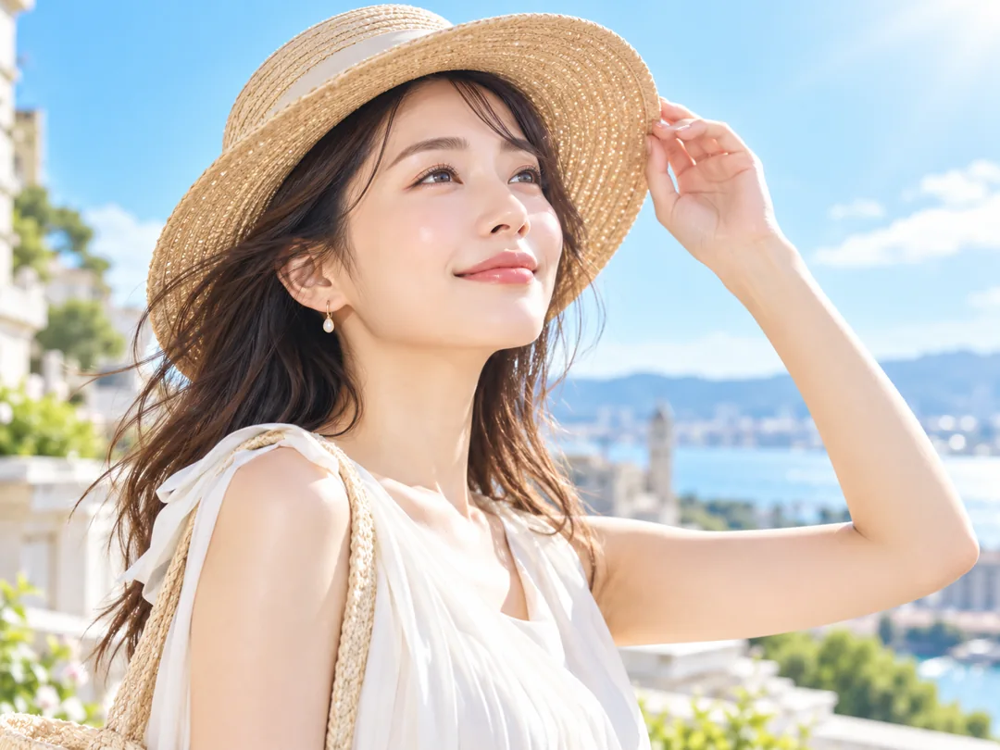

SPRING · 春
外出が楽しくなる季節
日差しが強まり始める時季。毎朝のUVケアを習慣に。

EPORASHE · ALL SEASON UV
毎日のUV対策を、もっと心地よく。
高い紫外線防御性能と、肌への配慮。
仕上がりも使い心地も、あきらめない。
THE EPORASHE PHILOSOPHY
日焼け止めは、日差しが気になる日だけのものではないから。エポラーシェが大切にしているのは、UV対策と同じくらい、毎日手に取りたくなる心地よさ。
毎日のベースメイクに
UVケアという習慣を。

THE STORY BEHIND UV BASE
開発の出発点は、従来のUVベースの重さやつっぱり感への違和感でした。美容研究家・岡江美希が目指したのは、なめらかに伸びて、仕上がりもきれいなUV下地。
試行錯誤の中で出会ったのが、シラソーマ製法。肌への配慮と紫外線対策を両立したいという思いが、エポラーシェのUVシリーズにつながっています。
開発ストーリーを公式サイトで読む ↗SPECIAL TECHNOLOGY
エポラーシェ独自の工夫「シラソーマ製法」

※公式提供の参考図をもとにした説明用模式図です。紫外線の全量が反射されることを示すものではありません。公式では、UVカット剤をアミノ酸成分やうるおい成分を含むマイクロカプセルに閉じ込める技術と説明されています。
365 DAYS OF SUNLIGHT
春も、夏も、秋も、冬も。ライフスタイルに合わせて続けるUVケア。
日差しが強まり始める時季。毎朝のUVケアを習慣に。

日陰や帽子も活用し、汗をかいたら塗り直しを。

涼しくなっても紫外線はあります。UVケアを続けて。

外出時間や環境に合わせ、冬もUV対策を忘れずに。
FIND YOUR FAVORITE
まずは仕上がりで。次に、使用感と色味・容量で。
色をつけずにUV対策。顔にもボディにも。
ナチュラルなメイクアップ効果も。


※カラーUVのSPFは公式商品説明の「SPF50」と商品カテゴリ表示の「SPF50+」に不一致があります。現在は商品説明側の表示を仮採用。公開前の正式確認が必要です。税込価格は確認時点の通常価格です。UVデイクリーム＆ベースSPはご提供の正規商品画像を使用。その他3商品は公式ショッピングサイトの原寸画像URLを直接参照しています。インターネット接続が必要です。
YOUR UV BASE FINDER
難しく考えなくて大丈夫。使いたい場所と仕上がりから選びましょう。
EASY EVERYDAY ROUTINE

いつもの化粧水・美容液で朝の肌を整えます。

適量を顔全体へムラなく。商品ごとの公式案内を確認してください。

お好みでファンデーションやパウダーを重ねます。

汗やこすれの後は塗り直し。帽子や日陰も上手に使いましょう。
UVの効果を得るには適量をムラなく塗り、日中も環境や汗・こすれに応じて塗り直してください。衣服や帽子、日陰の活用も大切です。
QUESTIONS & ANSWERS
どちらも無色透明です。カラーUVは色付きでメイクアップ効果によって肌色を自然に整えるタイプです。
UVデイクリーム＆ベースおよびSPは、公式に顔・全身への使用が案内されています。カラーUVは顔向けの化粧下地としてご案内しています。
公式ではUVカット剤をアミノ酸成分やうるおい成分を含むマイクロカプセルに閉じ込める技術と説明されています。
無香料（合成香料不使用）、無鉱物油、タール系色素不使用を意味します。すべての成分が無配合という意味や、肌トラブルが起きないという保証ではありません。
ONE FOR EVERY DAY
自分に合う一本を、エポラーシェのUVシリーズから。
4商品をもう一度見る ↗